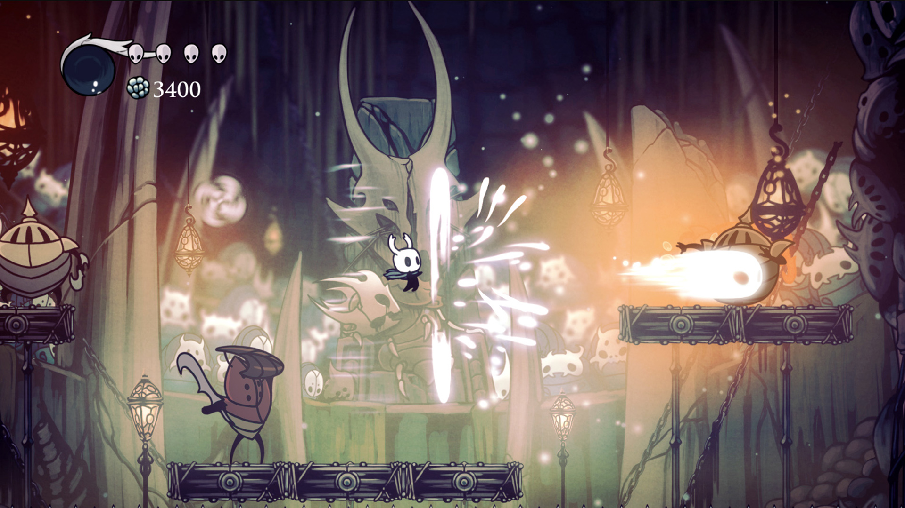

Etapa 01
Uma ideia para começar
Antes de pensar em uma lista de funcionalidades, vale definir o que o jogador vai fazer e por que isso pode ser interessante. Explorar, cultivar e superar obstáculos são pontos de partida diferentes. Hollow Knight aparece aqui como referência de uma aventura organizada em torno da descoberta de um mundo. A proposta inicial funciona como um guia para escolher o que faz sentido incluir no projeto.
